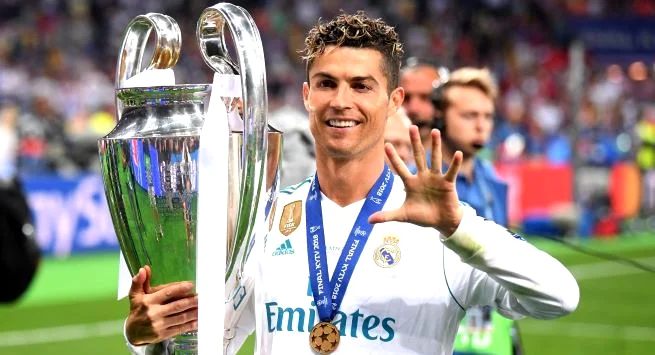

Cristiano Ronaldo (1985) é um futebolista português que fez história no Real Madrid. Foi jogador do Manchester United, do Juventus, da Itália e da Seleção Portuguesa. Foi eleito o melhor jogador do mundo em 2008, 2013, 2014, 2016 e 2017. Recebeu cinco bolas de ouro em sua carreira. Atualmente é jogador do Al-Nassr, da Arábia Saudita..
Infância Cristiano Ronaldo dos Santos Aveiro nasceu na cidade de Funchal, na Ilha da Madeira, Portugal, no dia 05 de fevereiro de 1985. Filho caçula do jardineiro José Diniz Pereira Aveiro e da cozinheira Maria Dolores dos Santos Aveiro, quando criança passava a maior parte de seu dia jogando bola na rua com os amigos..

Real Madrid Em 2008, depois de muitas especulações, Cristiano Ronaldo foi para o Real Madrid, e participou da temporada 2009-2010. Sua contratação foi a mais cara do clube, que tinha outros jogadores de destaque mundial como Kaká, Zidane, Ronaldo e Roberto Carlos, que fizeram parte da primeira fase das grandes estrelas do time espanhol, que ficaram conhecidos como os Intergalácticos..